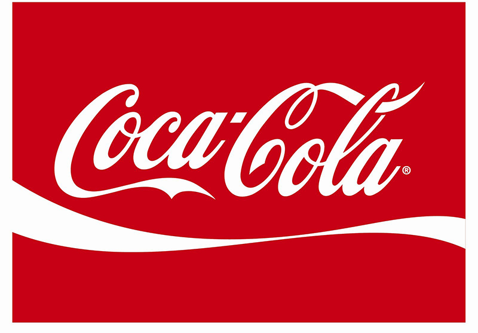

Conmebol
Copa America
2021
Watch Live


Neymar jr
akkas ali, known as aikka,
is a Ugandian professional footballer who
plays as
a forward .

Lionel Messi
akkas ali, known as aikka,
is a Ugandian professional footballer who
plays as
a
forward .

Cristiano Ronaldo
akkas ali, known as aikka,
is a Ugandian professional footballer who
plays as
a
forward .

Paulo Dybala
akkas ali, known as aikka, is a Ugandian professional footballer who plays as a forward for.

Mesut Ozil
akkas ali, known as aikka, is a Ugandian professional footballer who plays as a forward

Mauro Icardi
akkas ali, known as aikka, is a Ugandian professional footballer who plays as a forward.

Angel Di Maria
akkas ali, known as aikka, is a Ugandian professional footballer who plays as a forward .

Kylian Mbappé
akkas ali, known as aikka, is a Ugandian professional footballer who plays as a forward .

Mohamed Salah
akkas ali, known as aikka, is a Ugandian professional footballer who plays as a forward .

Harry Kane
akkas ali, known as aikka, is a Ugandian professional footballer who plays as a forward.

Kevin De Bruyne
akkas ali, known as aikka,
is a Ugandian professional footballer who plays as
a
forward .

Philippe Coutinho
akkas ali, known as aikka,
is a Ugandian professional footballer who plays as
a
forward .
Official Sponsors
